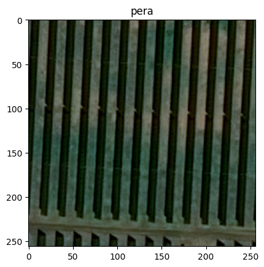
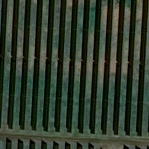

from PIL import Image
from PIL import ImageDraw, ImageStat
from pathlib import Path
from torchvision.transforms import ToTensor
import matplotlib.pyplot as pltPIL
im = Image.open("assets/example.png")
im
This will show image in a separate window, title doesn’t work, see here.
im.show('pera')This can show image in Jupyter with title but not true colors:
plt.imshow(im)
plt.title('pera')
plt.show()
In jupyter one can use only:
im # display(im)
To create new image:
width, height = 256, 256
mask = Image.new('L', (width, height), 0)Example to draw a polygon:
polygon = [(4, 1), (1, 54), (1, 222), (13, 1)]
ImageDraw.Draw(mask).polygon(polygon, outline=255, fill=255)To load image from png, show bands (i.e. channels):
im = Image.open('assets/example.png')
print(im.getbands())('R', 'G', 'B')im.getchannel('R')
To convert to RGB (from RGBA for example):
im.convert('RGB')
im.convert("RGBA")
im.convert('L')To convert to tensor:
tensorizer = ToTensor()
im_tensor = tensorizer(im)
print(im_tensor.shape)
im_tensor[:, :3, :3]torch.Size([3, 256, 256])tensor([[[0.3020, 0.2902, 0.2706],
[0.2941, 0.2824, 0.2667],
[0.2824, 0.2706, 0.2627]],
[[0.3333, 0.3216, 0.3059],
[0.3294, 0.3176, 0.3059],
[0.3137, 0.3059, 0.3020]],
[[0.3059, 0.2980, 0.2863],
[0.2941, 0.2902, 0.2863],
[0.2745, 0.2745, 0.2784]]])def save_image(im: Image, filepath: Path, overwrite: bool = False):
if filepath.exists() and not overwrite:
return
im.save(filepath, "PNG")Stat
stat = ImageStat.Stat(im)
print("""
* Min/max values for each band in the image:
{.extrema}
* Total number of pixels for each band in the image:
{.count}
* Sum of all pixels for each band in the image:
{.sum}
* Squared sum of all pixels for each band in the image:
{.sum2}
* Average (arithmetic mean) pixel level for each band in the image:
{.mean}
* Median pixel level for each band in the image:
{.median}
* RMS (root-mean-square) for each band in the image:
{.rms}
* Variance for each band in the image:
{.var}
* Standard deviation for each band in the image:
{.stddev}
""".format(*((stat, ) * 9)))
* Min/max values for each band in the image:
[(1, 142), (1, 137), (1, 128)]
* Total number of pixels for each band in the image:
[65536, 65536, 65536]
* Sum of all pixels for each band in the image:
[3093106.0, 3904015.0, 2879192.0]
* Squared sum of all pixels for each band in the image:
[225487516.0, 325785395.0, 221232102.0]
* Average (arithmetic mean) pixel level for each band in the image:
[47.197052001953125, 59.57054138183594, 43.9329833984375]
* Median pixel level for each band in the image:
[53, 72, 54]
* RMS (root-mean-square) for each band in the image:
[58.657194297640025, 70.50596160572695, 58.10106692885669]
* Variance for each band in the image:
[1213.1047251960263, 1422.4412214232143, 1445.6269479840994]
* Standard deviation for each band in the image:
[34.82965295830589, 37.71526509814314, 38.0214011838609]
Merge two images using Image.paste
im1 = im.crop((left, top, right, bottom))
im1 = im1.resize( (300, 300))
frontImage = frontImage.convert("RGBA")
background.paste(frontImage, (width, height), frontImage)